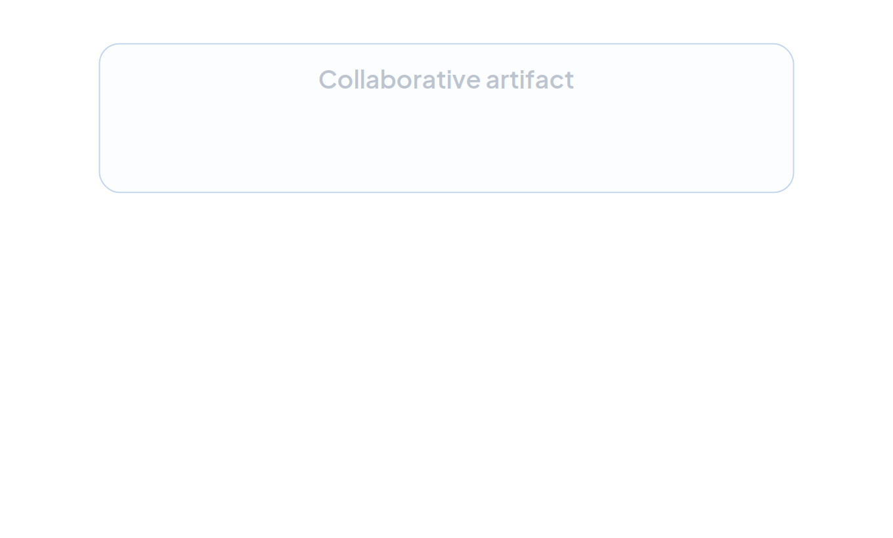
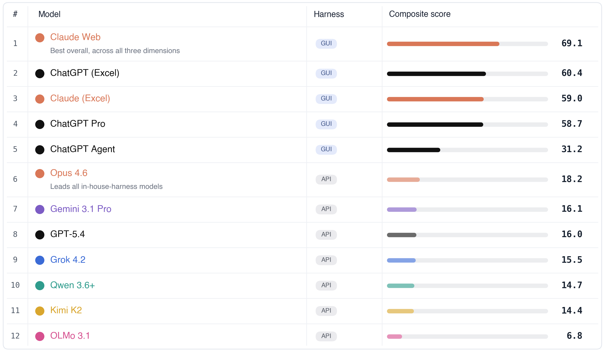
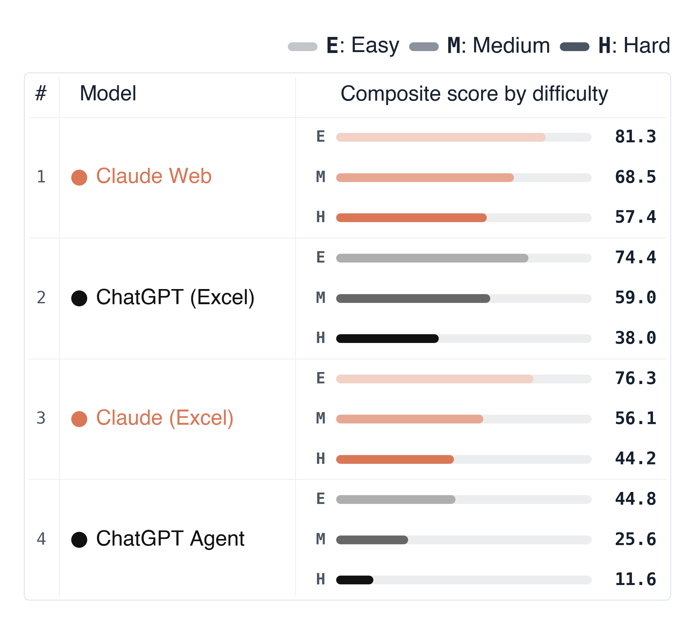

MBABench: Evaluating LLMs on Spreadsheet Tasks Across Critical Dimensions
TL;DR: Current LLM evaluations fail to capture the high-level qualities that matter to practitioners. In finance, where spreadsheets are the primary deliverable, these qualities determine whether a model is usable in practice. MBABench evaluates LLM agents on full spreadsheet construction, with a particular focus on the usability dimensions that matter in practice.
Why Spreadsheets Matter
Over a billion people work in spreadsheets, and in many white-collar workflows, the spreadsheet is the deliverable itself: fresh MBA grads are commonly tasked with creating DCFs, LBO models, and three-statement projections, which are then passed from analyst to VP to decision-maker. AI agents stand to revolutionize this workflow by automating spreadsheet construction, and frontier models can already build a full workbook end to end. The pressing question is whether what they produce meets the standard a practitioner would accept. That’s what MBABench sets out to answer.
Before turning to the specifics of the spreadsheet tasks and the benchmark, we first lay out the broader perspective on LLM evaluation that motivates this work.
LLM Evals Miss What Practitioners Actually Want
Consider code as an example. When an agent ships a codebase, the desired outcome is not solely passing a fixed test suite for the requested feature. The deliverable is a complete codebase that aligns with practitioners’ “taste”, a loaded term that admits more concrete characterizations in software engineering:
- The codebase should remain readable when a developer returns to it later to debug or extend it.
- Components should be modular, with reusable elements cleanly separated.
- Similar problems should be solved with consistent patterns.
- Abstractions should decouple logic such that modifying one module does not cascade through the others.
- The design should leave sufficient flexibility to absorb reasonable new features without rewrites, given prior expectations about likely extensions.
A handful of test functions cannot capture any of this, yet evaluation schemes built on test functions dominate the current coding benchmark landscape.
This is why agent-generated code still falls short when code quality is the priority. Producing a high-quality codebase in practice requires careful prompting, review, and iteration by experienced engineers. Andrej Karpathy’s public experience with NanoGPT illustrates the pattern.
The same applies to white-collar spreadsheet tasks, if not more.
Creating Spreadsheets in Finance
For many white-collar workstreams, spreadsheets are the deliverables. In finance, a DCF, an LBO model, or a three-statement projection are regularly shared, audited, and extended by other analysts, VPs, and decision-makers. A model that lands the right valuation with flawed formulas, hard-codes its assumptions, or breaks under a scenario toggle is an unusable model.
When a senior banker reviews an analyst’s spreadsheet, they look for:
- Are inputs separated from calculations and outputs?
- Do formulas reference cells consistently, or do values appear hard-coded mid-formula?
- Are sign conventions consistent across the model?
- Does formatting communicate structure: shaded inputs, bordered outputs, consistent number formats?
- Can the model run a scenario by toggling one cell, or does it require significant modifications?
Existing spreadsheet benchmarks miss almost all of this. They check whether a target cell holds the right number, or whether a function returns the expected output. The artifact’s quality, the property that determines its usability in practice, escapes the evaluation entirely.

What is MBABench?
MBABench 1.0 is a benchmark on end-to-end spreadsheet construction in finance, where tasks ask LLM agents to produce a full workbook from a brief case description, and where evaluation reports performance along three independent dimensions:
- Accuracy. Final answers match the reference solution, and the underlying calculations that produce them are correct.
- Formula quality. Formulas reference inputs and assumptions cleanly, propagate correctly, and avoid hard-coded constants.
- Formatting. The workbook follows conventions a reviewer expects: separated input, calculation, and output regions, consistent number formats, and clear labels and borders.
A workbook that scores well on numerical accuracy alone is not a usable artifact. MBABench rewards workbooks that a time-constrained decision-maker could open and extend. Each of the major dimensions above is further broken down into sub-criteria.
| Accuracy | 50% |
|---|---|
| Final Calculations | 35% |
| Starting Values | 25% |
| Task Completed | 25% |
| Sign Consistency | 15% |
| Formula | 35% |
|---|---|
| Logic Readability & Size | 20% |
| Handle Edge Cases | 20% |
| Avoid Hardcoding | 20% |
| Range Hygiene | 20% |
| Using Absolute References | 20% |
| Format | 15% |
|---|---|
| Workbook & Sheet Structure | 20% |
| Number Notation | 20% |
| Readability | 10% |
| Color Standards | 10% |
| Information Alignment | 10% |
| Style Consistency | 10% |
| Borders & Shading | 10% |
| Output Presentation | 10% |
Task Example: The Macrohard Acquisition
Consider a task drawn from MBABench: you are evaluating whether to acquire a company called Macrohard. The input is a PDF containing business assumptions (revenue growth, cost structure, debt terms, tax rates) and a partially formatted Excel template. The output should be a complete workbook that answers a single question: should we acquire this company, and at what price?
The answer hinges on IRR, which shows how much the company is expected to grow each year. But any single IRR number is a prediction about the future, and predictions change dramatically based on your assumptions: what if revenue grows at 3% instead of 5%? What if interest rates rise? What if the company sells for a lower multiple than expected? The point of a financial model is not to produce one number. It is to expose the assumptions behind the number, cover the dimensions along which the future might plausibly differ, and let decision-makers see exactly how sensitive the conclusion is to each assumption. This is why, as argued above, the qualities of the model as a system (modularity, readability, extensibility) are not secondary to getting the right answer. They are what makes the workbook usable in practice.
To support this, the agent must construct an income statement (revenue minus costs, year by year), a balance sheet (what the company owns vs. what it owes), a cash flow statement (actual cash moving in and out), a debt schedule (how loans are drawn and repaid over time), depreciation tranches, and an equity waterfall, all projected over a 10-year horizon. Each component must be structured so that changing any input assumption propagates cleanly through the entire workbook, and so that a reader can trace any output back to the assumptions that produced it.

A completed workbook’s summary sheet: every answer cell links back to model_main, with no hard-coded numbers, so a reviewer can trace each figure to its source.
Evaluation
Having established the importance of these high-level desiderata in practice, a natural question arises: can these structural properties be graded with deterministic rules? Most of the dimensions described above require an evaluation that accounts for the context. Whether a reference should be absolute or relative depends on how the formula will be copied. Whether an IFERROR wrapper is needed depends on whether the denominator can plausibly be zero given the case context. Whether a layout is acceptable depends on what the relevant quantities are and whether their reading order matches the logical flow. Evaluating these criteria requires reasoning about workbook structure and case context.
This is why MBABench uses LLM-as-judge evaluation. An LLM judge can read the case PDF, examine the workbook’s formula graph, and assess whether a particular structural choice is appropriate given the task. We develop and validate an LLM judge to match expert human ratings with high accuracy (see the paper).
Agent Performance
Qualitatively, our experts found that spreadsheet-native agents frequently introduce formatting inconsistencies and tend to hard-code values rather than express the underlying calculations as formulas. The hard-coded numbers are usually correct, which suggests these agents can do the math in some other environment but fail to express it natively in the spreadsheet, exactly the failure mode the formula-quality dimension is designed to surface.
Quantitatively, we found performance degrades significantly with task difficulty across all agents, suggesting substantial headroom for agents to improve on sophisticated spreadsheet tasks that experts are expected to complete.


Future Roadmap & Collaboration
MBABench 1.0 is a starting point for evaluating agents on end-to-end white-collar workflows. The current benchmark focuses on spreadsheet tasks in finance. From here, we are expanding along three axes:
- Longer-horizon cases. Tasks that span more steps and require sustained context over the course of a workflow.
- More realistic case environments. Tasks with ambiguity, incomplete information, and the kind of underspecified briefs analysts actually receive.
- More domains beyond finance. Coverage of additional white-collar workflows where the deliverable is a structured artifact.
If you work on agents for white-collar workflows, or you have domain expertise we should be building tasks against, get in touch. We would like to hear from you.
Interested in partnering or contributing? Reach out at ty2531@columbia.edu.
The MBABench Team